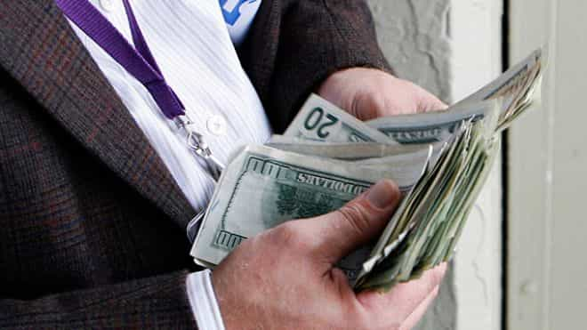

< < < Back
The Importance Of Money – Return Of Kings
Money dictates the flow of human living in the modern world. Without money, life is often difficult and painful, and even more for a man. It helps to create freedom. I’ve seen both want and abundance of money in life, and I can say one of the most depressing times in life was when I was without money.
The importance of money
Money is a non-negotiable, indispensable commodity in every person’s life. The possession of money is itself a resource and the usage of it can help to acquire resources. All the things we use in our lives have monetary value, whether directly or indirectly. Money’s power is indisputable after the power of faith or self-belief in human life.
Money can buy you happiness
With money, you can often rule today’s materialistic world. If you have enough money, poverty will never approach you. Contrary to what most people think, it is not money or the love of money which is the root of evil—it is greed, a love of power and authority, poverty, and a fear of want which are often the roots of evil in this world. Money is just a humble agent in this scenario, because money helps to create power and authority. Money helps to eliminate poverty. Money helps to eliminate wants in life, especially if the wants are related to commercial and even human interaction, as most human interaction in the modern world is now commercialized.
Money can buy you health
You can maintain your health even though you cannot rule your health. Money helps you with that. With modern healthcare increasing human longevity, money can help you to improve your health by letting you lead a comfortable, healthy lifestyle if you spend money on healthcare, whether it may be spending on diet and nutrition, working out, or just taking medication. A lot of people globally postpone health checkups because they don’t have enough money to pay for health care bills. Again money’s role in health maintenance is irrefutable.
Money is an aphrodisiac

Women and money are often inseparable. Money often helps to create power and reputation. Reputation creates authority. All chicks dig authority.
Money may not always be able to get you or retain the women you want, but it will definitely get you the women who want you for it. And there will always be women who will want men for cash. Whores have abounded throughout human history. Hell, whoredom is the oldest profession in humanity. The oldest profession itself is a proof enough how women gravitate to resources (cash), and offered and offer sex in return. Resources often open a woman’s legs faster and more easily than game.
Even if your woman says she doesn’t need cash and she loves you for what you ‘are’ as a man, the question to be raised is: are you a naked man living in a jungle using nothing? You’re using the internet to read this post. Who’s paying for it? Even if you’re not, someone is.
Your identity as a man is your personality. What is your personality? Your personality is the cumulative accumulation of your wisdom, skills, character, education, upbringing, talents, career and style. How were these acquired? For free?
You acquired an education. Whether you actually went to a university or you studied at home, you are still ‘paying’ for it, or someone is ‘paying’ for it.
You go to the gym to build yourself, or you work out at home. You adopt the perfect diet to build yourself up, with the right supplements. Who’s paying to buy your meals and gear? Or is someone paying for you? Either ways, money is still working in the background.

You’re taking care of your body using the latest items for male grooming. You’re getting the best wardrobe to accentuate your style. You’re reading online and learning from someone on how to develop your style and game. Either ways, either you’re paying for it or someone has already paid for it which they’re passing onto you. Money again works in the background.
You developed your talents and skills. You might be a carpenter, a writer, a sculptor, a sportsman, a hunter or what not else. Either ways you needed the tools to practice to develop yourself. Those tools could be a computer, a book, a gun or whatever else. Either ways, someone paid for those tools which they passed onto you or you paid for it. Money’s presence in the background again is indisputable.
After all this self-development of your persona, you met up a chick who liked you for what you were. She was attracted to your game, your haircut, your looks, your conversation, or your style. You gamed her and bedded her without spending a dime on drinks or what not. Do you think this was free? You may have not spent cash to fuck her, but you have spent cash to develop yourself which acquired the ‘free fuck’ with her. Money again talks in the background, and plays an important role in your ‘free fuck’ with her. That’s why there is no such thing as a ‘free fuck.’ The fucks you get without spending cash are actually what I call as ‘bonus fucks’. But it is the ‘bonus fucks’ is what you should concentrate on getting from women (i.e. the bangs without spending cash).
The fact remains that women are essentially attracted to resources and are hypergamous, and often transactional when it comes to intimacy. The barter system of interaction between the genders right from antiquity is a proof that resources were the key to securing women, even if resources were not often the key to securing them forever. Women will naturally gravitate to cash.
Money has a strange effect on the libido, both male and female. While money makes women wet, money also makes men rediscover their mood for sex. One of the worst bummers for most men when it comes to sex is financial stress, whether it may be for self or for your partner. Money is thus an important but underappreciated aphrodisiac.
An important sign of a keeper
One of the important signs of a woman that you should consider in a keeper is the woman who doesn’t waste your cash and ferociously saves it like it’s her own. An economical girlfriend is the one who should be considered to for a long term relationship or possibly commitment if she has other signs too. An endearing quality of a woman is her parsimony, when she stops you from spending for her, out of a sincere concern for your financial health. These women are the women you actually feel and want to spend for, because of their thoughtfulness. A live-for-the-day type chick who expects you to blow up cash, to get access to her holes is not the type for a LTR, unless if you’re rich enough to afford her. The fact is that all women have a price, so focus on the one who gives you the maximum returns for the least amount of investment. Better game her to fuck her.
A great wingman
The best wingmen in your life are not only the ones who help with your game, but also those who save your cash for you. I’ve had financial parasites in my life (both chicks and buddies) so I’ve learnt it the hard way. But I’ve been lucky to have found great buddies with whom I have gone pussy hunting. One of the qualities of a great wingman is not only in helping you with your game, or helping to eliminate rival cock blocks, but also to determine which of your targets are the gold diggers, or the flakes looking for free drinks and the ones who can actually be converted into bangs with minimal spending. I’ve had these buddies who’ve stopped me from going overboard from spending on drinks on myself or girls or even them. In retrospect, I think such wingmen are a great asset for any guy to have. Sometimes your wingman can be the greatest leech that you have, rather than the flaky bitch you’re trying to pick up.
Your real family or tribe
The real family in your life is not the people whom you’re born related to by blood. They are rather the people who love you unconditionally for what you are as a person, no matter how you are and not conditionally for what you have. My own relatives have ripped me off at times. Money (or the lack of it) in your life thus is the litmus test that you must consciously consider every time when you’re selecting the people to build your own family or tribe.
Since the world today is primarily a commercialized jungle, where emotions, feelings and attachment are often primarily a commercial investment, understand that money can be your best friend in sorting out the pearls from the pebbles among the people in your life. Money is an indispensable friend in your life, right from the cradle to the grave.
Read More: The Synergy Of Game And Money


{kind=link}
{kind=link}
{kind=link}
{kind=link}
{kind=link}